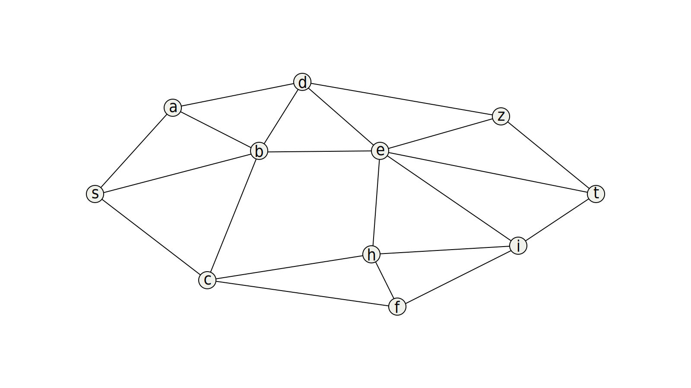
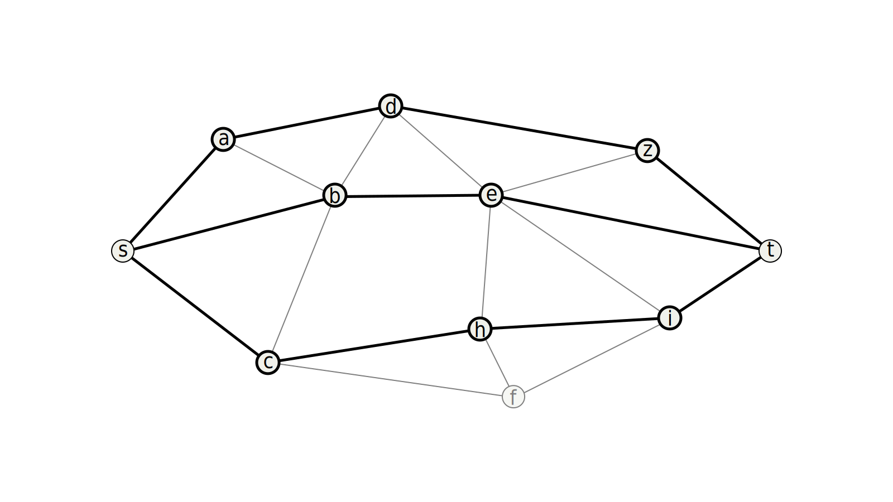
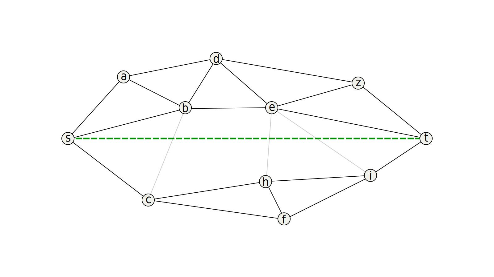
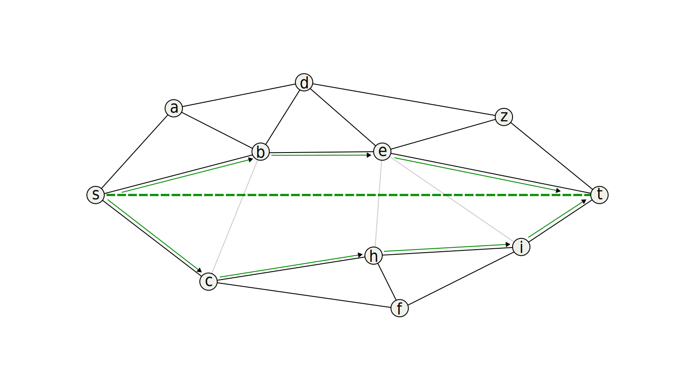
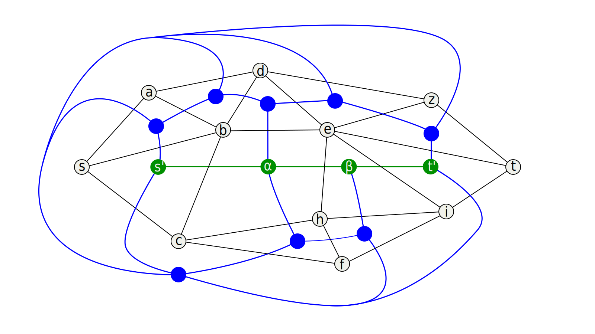
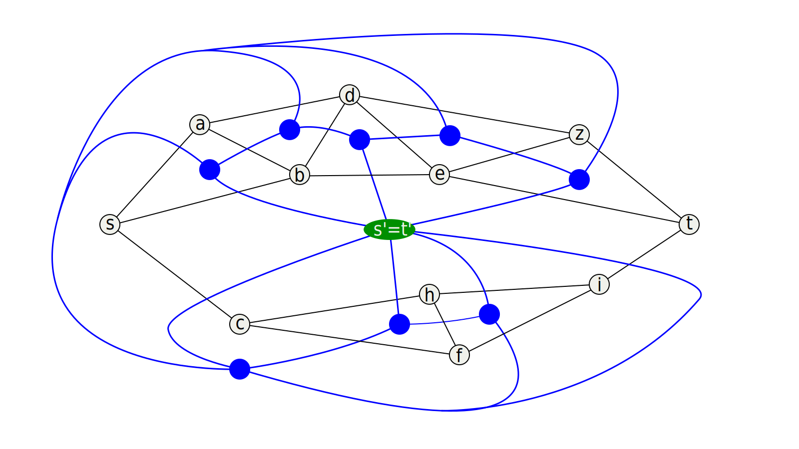
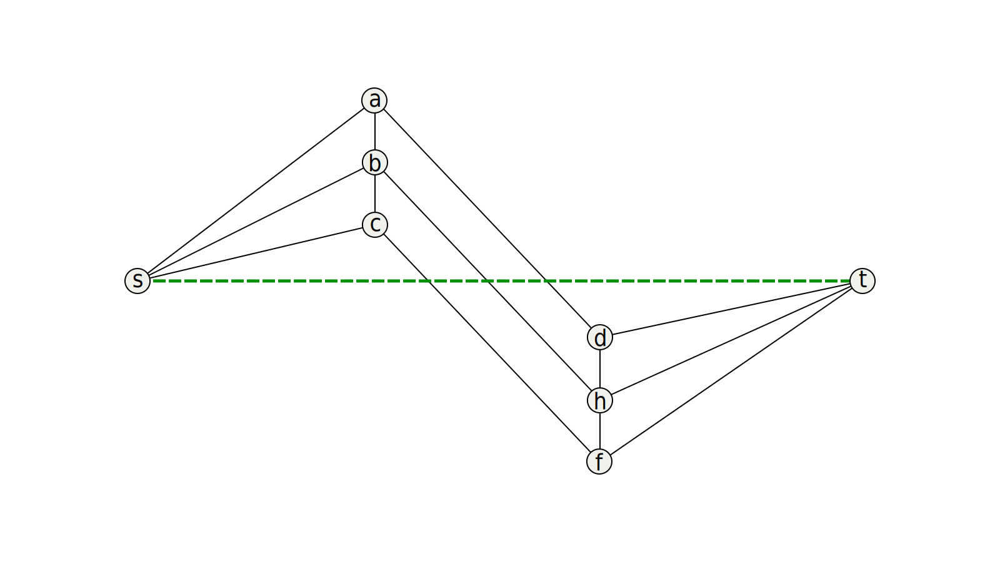
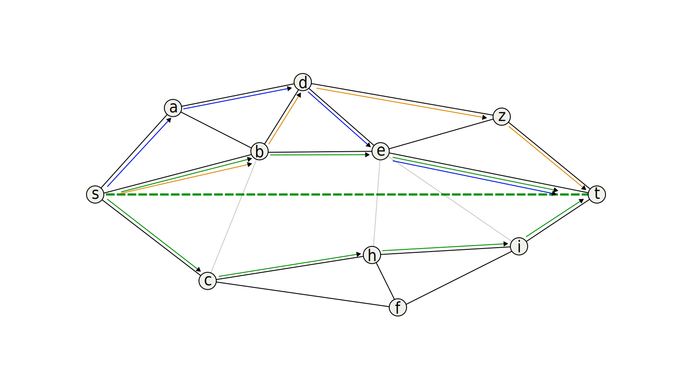

BeRGeR
Using Braids for Byzantine-Resistant Geometric Routing on Polyhedral Networks
Zaz Brown
Table of Contents
Problem Definition
| Online routing | Nodes are myopic (only see immediate neighbors) |
Robust routing on low-resource devices
- IoT
- Sensor networks
- Vehicular networks
1 faulty “Byzantine” node
Using Braids for Byzantine-Resistant Geometric Routing on Polyhedral Networks
| Offline routing | Routing tables (nodes store directions) |
| Geometric routing | |
| Greedy routing | Go to node closest to destination |
| Face routing | Always turn right (or left) |
Using Braids for Byzantine-Resistant Geometric Routing on Polyhedral Networks
| Byzantine node | Node that behaves arbitrarily |

Using Braids for Byzantine-Resistant Geometric Routing on Polyhedral Networks
| Network | Graph |
| Polyhedral | |
| Planar | No edges intersect |
| 3-Connected | To disconnect the network, you need to remove 3 nodes |
| 3-Connected | \(\exists\) 3 disjoint paths between each pair of nodes |
Using Braids for Byzantine-Resistant Geometric Routing on Polyhedral Networks
Exactly what they sound like.
Naïve approach
Route along 3 disjoint paths
\begin{align*}
\exists i,j \ : \ m_i &= m_j, \\
p_i &\ \cap \ p_j = \emptyset
\end{align*}
For each node, find 2 disjoint paths that skip it.
Naïve approach

Naïve approach

Generalized approach
Route along collectively disjoint paths
\begin{align*}
\exists i,j,k,... \ : \ m_i &= m_j = m_k = \cdots, \\
p_i &\ \cap \ p_j \ \cap \ p_k \ \cap \ \cdots = \emptyset
\end{align*}
For each node, find a set of collectively disjoint paths that skip it.
Remove edges that intersect st-line
Remove edges that intersect st-line

Route along both sides

Proof

Proof

Route along both sides
Counterexample

Counterexample

Route along both sides
Braids

Acknowledgements
Prof. Mikhail Nesterenko, for supervising the research
Prof. Gokarna Sharma, for his feedback
Prof. Jenya Soprunova, for her feedback
Prof. Darci Kracht, for advice on the presentation
Questions?
@inproceedings{BeRGeRJMM,
title={Using Braids for Byzantine Resistant Geographic Routing
on Polyhedral Networks},
author={Brown Zaz and Mikhail Nesterenko},
booktitle={Joint Mathematics Meet},
address={San Francisco, USA},
month={Jan},
year={2024},
url={https://zazbrown.com/research/talk/JMM/BeRGeR/BeRGeR.html}
}